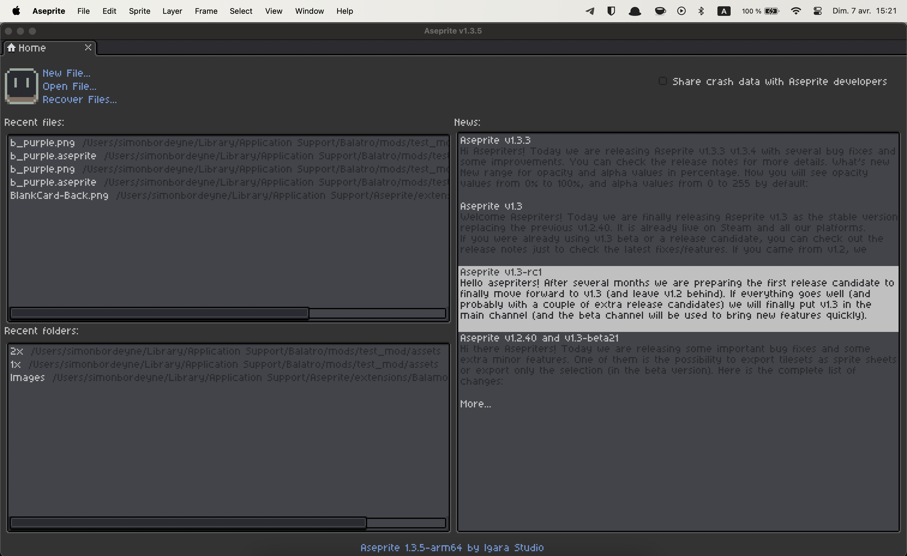
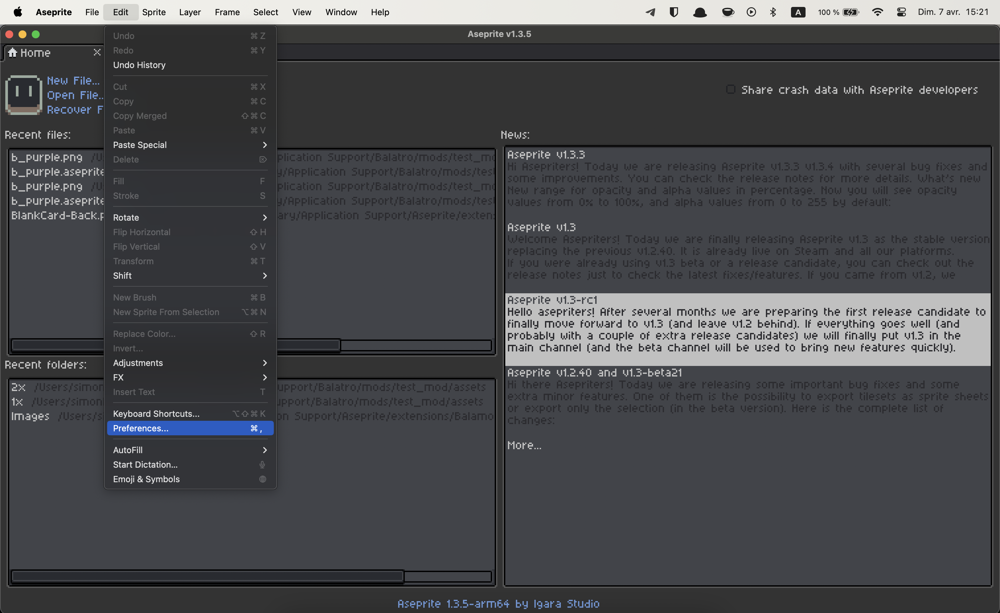
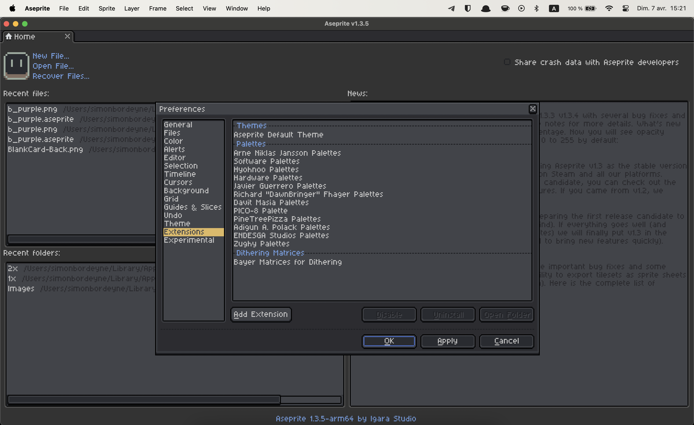
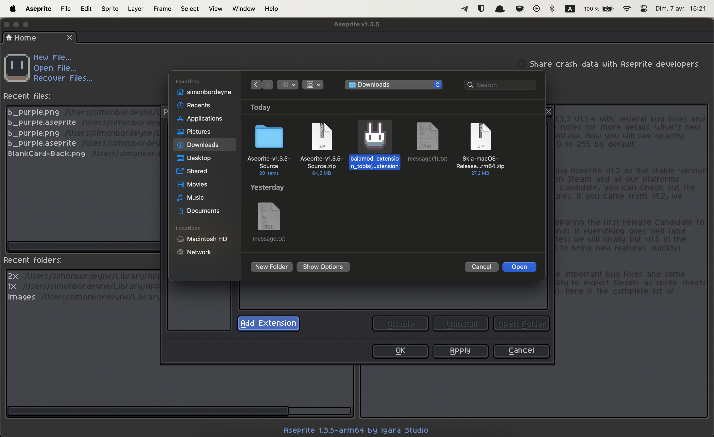
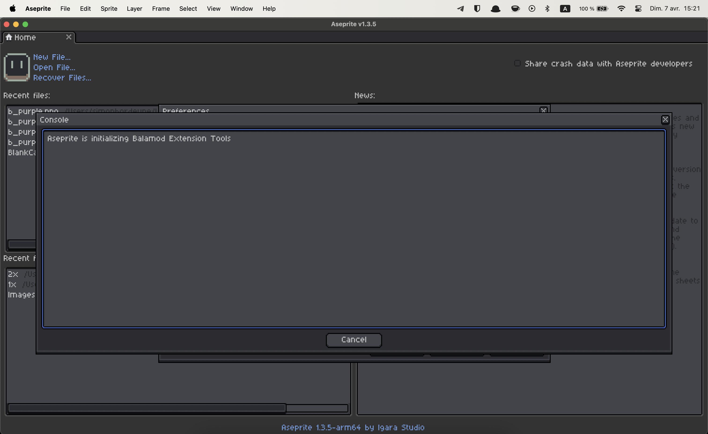
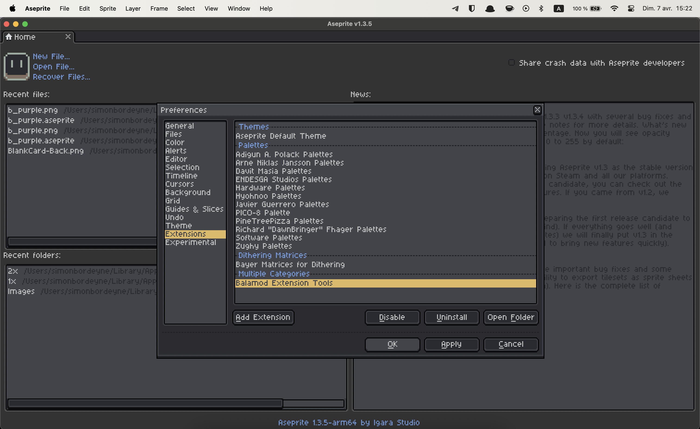
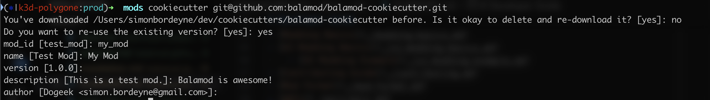

Introduction
Balamod is a mod-loader, decompiler, and code injector for a popular poker game, Balatro. Crafted with Rust, it embodies speed, safety, and simplicity.
Here’s what Balamod brings to the table:
- Mod Loading: Load your favorite mods into Balatro with ease.
- Decompiling: Break down the game code for analysis and understanding.
- Code Injection: Modify the game on the fly, introducing new elements and features.
- Rust-Powered: Enjoy the speed, safety, and simplicity of a tool built with Rust.
- Customizable: Tailor Balamod to your needs with its flexible design.
- In-Game Mod Gallary: Balamod supports downloading and displaying mods within the game, providing a seamless modding experience.
This guide is a testament to what Balamod can do. It’s not just a tool, it’s a game-changer for Balatro enthusiasts.
Related Links
Installation
If you are new to Balamod, this guide will help you install Balamod mod-loader on your game copy.
After the injection, You are able to browse the mods contributed by the community in the in-game Mod Menu.

Install using the GUI (recommended)
Since balamod 1.x, a graphical user interface has been made in order to ease the installation process.
Currently, the latest version is 1.3.4 published on 2024-08-20 16:39.
Download the binary that corresponds to your platform.
| Platform | Download link |
|---|---|
| Windows | balamod-windows.zip |
| macOS | balamod.pkg |
| Linux | balamod-linux.tar.gz |
You also can download the latest Balamod binary from the GitHub releases page.
Windows
Unzip the archive, and run balamod.exe. The executable is not signed so you will have to authorize it to run.
Linux
In a terminal, run the following to download the archive, untar it and execute the gui
$ curl -fsSL "https://github.com/balamod/balamod-gui/releases/download/1.3.4/balamod-linux.tar.gz"
$ tar xzvf balamod-linux.tar.gz
$ chmod +x ./balamod-linux/balamod
$ ./balamod-linux/balamod
MacOS
Download the pkg file, then double click it. Go through the installer, and you’ll find Balamod installed in your /Applications folder
Install using the CLI (legacy)
Currently, the latest version is v1.0.1 published on 2024-08-20 12:41.
Balamod currently doesn’t work on macOS i386/amd64, but it will work on Apple Silicon(ARM64) aka M1/M2/M3.
Download the binary that corresponds to your platform.
| Platform | Download link |
|---|---|
| Windows | balamod-v1.0.1-windows.exe |
| macOS | |
| Linux | balamod-v1.0.1-linux |
You also can download the latest Balamod binary from the GitHub releases page.
Windows
Execute the downloaded binary in a terminal with the following command:
.\balamod-v1.0.1-windows.exe -a
For people who are not familiar with the command line, you can simply install Balamod as follows:
- Open the folder where the balamod binary is located.
- Click the address bar and type
cmdand press Enter. A Command Prompt window will open. - Type
.\balamod-v1.0.1-windows.exe -a. - Press Enter.
The output of Command Prompt will look like this:
C:\Users\user\Downloads\Programs>.\balamod-v1.0.1-windows.exe -a
Found 1 Balatro installations.
Balatro v1.0.0n found !
Implementing mod-loader on main...
Implementing mod-loader on uidef...
Done!
Injecting main
Done!
Injecting uidef
Done!
Total time: 266.0006ms
Backup of executable: 18.2463ms
mod-loader implementation (main): 234µs
mod-loader implementation (uidef): 372µs
mod-loader injection (main): 157.8571ms
mod-loader injection (uidef): 86.2937ms
C:\Users\user\Downloads\Programs>
macOS
Double-click the downloaded file (``) and follow the installation instructions. After that, open the terminal and execute the following command:
./balamod -a
Linux
Execute the downloaded binary in a terminal with the following command:
chmod +x balamod-v1.0.1-linux
./balamod-v1.0.1-linux -a
Verify Installation
To verify that Balamod is installed correctly. Just run Balatro Game and you will see the Balamod Version in the top right corner of the game.

Update Balamod
To update Balamod, you need to restore the balatro to its original state and then install the new version of Balamod.
Please refer to the Uninstall guide to restore the game to its original state.
After that, you can install the new version of Balamod.
Getting Started
This chapter will guide you how to use more functionalities of Balamod. Such as decompiling and code injection the game.
Balatro is a game that is written in Lua with the LÖVE framework. The game is compressed into a single executable file. Balamod can easily decompile the game or inject code into it.
Sometimes, the game will be updated, and the decompiled files will be outdated. You need to decompile the game again to get the latest files.
Balamod CLI
Balamod CLI is a command-line interface that allows you to interact with the game. You can decompile the game, inject code into it, and more.
Use the following command to see the available commands:
$ ./balamod --help
Usage: balamod [OPTIONS]
Options:
-x, --inject
-b, --balatro-path <BALATRO_PATH>
-c, --compress
-a, --auto
-d, --decompile
-i, --input <INPUT>
-o, --output <OUTPUT>
-u, --uninstall
-h, --help Print help
-V, --version Print version
Decompiling
Use the following command to decompile the game, this will generate decompiled folder with the decompiled game lua files:
./balamod -d
Also, you can specify the output folder:
./balamod -d -o output
Injecting
This is useful when you want to pack your modifications back into the game. Use the following command to inject the game:
./balamod -x -i <file_to_injected> -o <file_destination>
The file_to_injected is the path to the file that you want to inject, and the file_destination is where the file originally located in game.
For example, if you want to inject the UI_definitions.lua file, you can use the following command:
./balamod -x -i ./my_decompiled_files/functions/UI_definitions.lua -o functions/UI_definitions.lua
Uninstall
If the mod-loader crashes the game, or any other reason, you want to uninstall the mod-loader.
Uninstall by Balamod CLI
You can use balamod CLI to uninstall and restore the backup of the game.
./balamod -u
Uninstall by Steam
You can also restore the game with Steam by verifying the integrity of the game files.
The steps are:
- Open Steam.
- Go to the Library.
- Right-click on Balatro.
- Select Properties.
- Go to the Local Files tab.
- Click on Verify Integrity of Game Files.
Mod Loading
Balamod can load mods and apis automatically or manually. When balamod mod-loader is installed(by running balamod -a), it will create a mods folder and apis folder on the AppData directory.
The folder is vary depending on the platform.
- Windows:
C:\Users\<username>\AppData\Roaming\Balatroaka%APPDATA%\Balatro - macOS:
~/Library/Application Support/Balatro - Linux:
~/.local/share/Steam/steamapps/compatdata/2379780/pfx/drive_c/users/steamuser/AppData/Roaming/Balatro
Automatic Mod Loading
If user downloads a mod from the in-game mod gallary, the mod will be automatically loaded by balamod. The mod will be placed in the mods folder.
Manual Mod Loading
If user downloads a mod from the internet, the mod file should be placed in the mods folder. The mod will be loaded by balamod when the game is started.
FAQ
- What is balamod?
- How do I install balamod?
- In what language are mods/Balatro written in?
- Where are my mods/apis stored?
- How do I create a mod?
- Help, on MacOS, Balatro crashes after installing balamod, and talks about “SSL”!
- Is this compatible with Steammodded or other mod-loaders?
This is a list of frequently asked questions about balamod and Balatro.
If you have any questions that are not answered here, feel free to ask in the Discord server.
What is balamod?
Balamod is a mod-loader and framework for the game Balatro. It allows users and modders to modify the game’s code, mechanics and assets.
More information can be found on the Balamod GitHub repository and Documentation.
How do I install balamod?
Please refer to the Installation guide for detailed instructions on how to install balamod on your platform.
In what language are mods/Balatro written in?
Balatro is written in Lua, and so are the mods and APIs.
Where are my mods/apis stored?
Please refer to the Mod Loading guide for detailed information on where mods and APIs are stored on your platform.
How do I create a mod?
In short, you need to create a new lua file in the mods folder, and insert your mod in the mods table.
For more detailed information, please refer to the Modding Basics guide.
Help, on MacOS, Balatro crashes after installing balamod, and talks about “SSL”!
No worries, this is a known issue. You can fix it by installing OpenSSL using Homebrew.
/bin/bash -c "$(curl -fsSL https://raw.githubusercontent.com/Homebrew/install/HEAD/install.sh)" && brew install openssl@3
Is this compatible with Steammodded or other mod-loaders?
Yes and no. Balamod is a mod-loader, and as such, injects a lot of code into the game to make things just work. Installing other mod-loaders may work, or may not, but in any case, no support will be provided for such configurations. In theory, you should not need any other mod-loader, as balamod is designed to be as flexible and lightweight as possible, while providing all of the necessary tools for both modders and users. Other mod-loaders include the also popular Steammodded loader, which is not compatible with balamod at this time.
Modding Basics
Balamod mods follow a very specific format, composed of at least 2 files
...
└─mods/
└─your_mod_id/
├─main.lua
└─manifest.json
main.lua
This is the entrypoint of your lua code. main.lua should always return. It is where you can add functions, require
APIs, and register events for your mod. Below is an example empty main.lua. You don’t need to have all
the hooks, only the ones you need.
local logging = require("logging")
local logger = logging.getLogger("test_mod")
local function on_enable()
logger:info("Mod enabled")
end
return {
on_enable = on_enable
}
manifest.json
This JSON document specifies the metadata about your mod, here are the fields
| field | type | required | description |
|---|---|---|---|
| id | string | true | the mod id for your mod. Must match the name of the folder the mod is in. |
| name | string | true | Display name for your mod, displayed in the mod menu |
| version | string | true | Semantic versioning for your mod, used for checking updates for it. |
| description | string[] | true | Description of your mod. Each entry in the array is a line |
| author | string | true | Author(s) of the mod |
| load_before | string[] | true | List of mod IDs to load before this mod |
| load_after | string[] | true | List of mod IDs to load after this mod |
| min_balamod_version | string | false | Minimum required version of balamod for this mod to run |
| max_balamod_version | string | false | Maximum version of balamod for this mod to run |
| balalib_version | string | false | Desired version of balalib for this mod to run (Ex: =1.0.0 or >1.0.0) |
Your mod manifest is also describing your mod for submissions to the mod catalog. Mods with invalid manifests will not load into the game.
Localization and i18n
Localization discovery is done automatically. Balamod will load all json files within the localization
folder of your mod for new strings to translate. The format of a localization string is identical to what
the game internally uses, besides being in JSON rather than LUA to ease on interoperability (allowing
you to make scripts to generate localizations with an API like DeepL for instance)
Here is a mod folder structure that supports the english language:
...
└─mods/
└─your_mod_id/
├─localization/
│ └─en-us.json
├─main.lua
└─manifest.json
The following localization file names are available:
de.json: Deutch – Germanen-us.json: English – English USes_419.json: Español (México) – Spanish (Mexican)es_ES.json: Español (España) – Spanish (Spain)fr.json: Français – Frenchid.json: Bahasa Indonesia – Indonesianit.json: Italiano – Italianja.json: 日本語 – Japaneseko.json: 한국어 – Koreannl.json: Nederlands – Dutchpl.json: Polski – Polishpt_BR.json: Português – Portugese (Brazil)ru.json: Русский – Russianzh_CN.json: 简体中文 – Chinese (Simplified)zh_TW.json: 繁體中文 – Chinese (Traditional)
Localizations are merged in the load order of mods. If you need to overwrite the localization of a mod,
or if you want to change the game’s localization, make sure your mod loads after the mod you want
to overwrite. Use the load_after manifest key to that effect.
See utils.mergeTables() for more informations.
events
Balamod provides a set of events that you can hook into to modify the game’s behavior. Below is a list of events that you can hook into.
| name | args | return | description |
|---|---|---|---|
| on_enable | None | nil | Called when the mod is enabled and also AFTER game initialization if mod was not disabled |
| on_disable | None | nil | Called when the mod is disabled, it’s a good place to clean up changes |
| menu | None | nil | Called when the mod menu is opened, it will add a “menu” button if you returned it in the table near the “enable/disable” button that calls the function. |
| on_game_load | args:array: The program arguments | nil | Called before the game is loaded, you can modify the game’s behavior here. It’s recommended tu use injection here. |
| on_game_quit | None | nil | Called when the game is quit, you can clean up changes here. |
| on_key_pressed | key:string: The key pressed, see KeyConstant | nil|boolean | Called when a key is pressed. Setting the return value to true will prevent the key from being processed by the game. |
| on_key_released | key:string: The key released, see KeyConstant | nil|boolean | Called when a key is released. Setting the return value to true will prevent the key from being processed by the game. |
| on_mouse_pressed | button:number: The mouse button pressed (1: left, 2: right, 3: middle), x:number: The x position, y:number: The y position, touch:boolean: If it’s a touchscreen touch-press. | nil|boolean | Called when a mouse button is pressed. Setting the return value to true will prevent the mouse event from being processed by the game. |
| on_mouse_released | button:number: The mouse button released (1: left, 2: right, 3: middle), x:number: The x position, y:number: The y position. | nil|boolean | Called when a mouse button is released. Setting the return value to true will prevent the mouse event from being processed by the game. |
| on_mousewheel | x:number: The x scroll amount, y:number: The y scroll amount | nil|boolean | Called when the mouse wheel is scrolled. Setting the return value to true will prevent the mouse event from being processed by the game. |
| on_pre_render | None | nil | Called before the game starts rendering a frame. |
| on_post_render | None | nil | Called after the game finishes rendering a frame. |
| on_error | message:string: The error message | nil | Called when an error occurs. |
| on_pre_update | dt:number: The time since the last update in seconds | nil|boolean | Called before the game updates. Setting the return value to true will prevent the update from being processed by the game. |
| on_post_update | dt:number: The time since the last update in seconds | nil | Called after the game updates. |
UI Modding Basics
Balatro comes with a built-in UI framework that draws most of the elements of the game. It may seem hard to grasp at first but it’s actually quite simple in its structure.
The G.FUNCS and G.UIDEF tables
The game uses 2 tables for the UI.
G.FUNCS
It’s the table that holds all of the UI callbacks. Basically, whenever you click on a button, its associated to a function defined here. Functions in G.FUNCS match the following signature, the UIElement class being defined in engine/ui.lua :
function(element: UIElement) -> nil
G.UIDEF
It’s the table that holds the UI definitions for the game. An UI definition is a function that returns a table that has a very strict structure:
G.UIDEF.my_ui_definition = function(element)
return {
n = G.UIT.ROOT,
config = {},
nodes = {}
}
end
Let’s break this down:
n = G.UIT.ROOT: n here represents the node “type”. There are several node types available in BalatroT, which is for text nodesB, for boxes (which can be rounded)C, for column layoutsR, for row layoutsO, for objects (such as cards and such)ROOT, for the root node of an UI definition
config: configuration for the node, holds several attributes, each for configuring alignments, or button behavior for instancenodes: is an array of child nodes
Think of the Balatro UI definition like you would an HTML document. In HTML, you’d write something like this
<div>
<input type="text"></input>
<div>
<span><p>Some Text</p></span>
<span><p>Other Text</p></span>
</div>
</div>
Which would roughly be equivalent to
{
n = G.UIT.ROOT,
config = {},
nodes = {
{
n = G.UIT.I,
config = {},
},
{
n = G.UIT.C,
config = {},
nodes = {
{
n = G.UIT.R,
config = {},
nodes = {
{
n = G.UIT.T,
config = { text = "Some Text" }
},
},
},
{
n = G.UIT.R,
config = {},
nodes = {
{
n = G.UIT.T,
config = { text = "Other Text" }
},
},
},
},
},
},
}
Configuration options for each UI type
Common config options
Text options
For text UI nodes, the following config table is expected, all values are optional (can be nil), unless specified otherwise.
config.text, must be specified, unlessconfig.ref_tableandconfig.ref_valueare both provided. The text to display. Type:stringconfig.colour, defaults toG.C.UI.TEXT_LIGHT(which is white with full opacity,#FFFFFFFF)config.scale, defaults to1. Text scaling to apply to the text. Type:floatconfig.shadow, defaults tofalse. Whether to draw a shadow behind the text. Type:booleanconfig.focus_argsconfig.ref_table: a reference table, basically, thetextvalue will be computed by looking upconfig.ref_valueinconfig.ref_table.config.ref_value: the value to look up into the providedconfig.ref_tableconfig.funcconfig.id: An unique ID for the nodeconfig.juiceconfig.outline_colour: Text outline colour
Box options
Column options
Row options
Object options
Premade UI widget factories
The following functions are defined in functions/UI_definitions.lua, and use the concepts defined above
to make more complex UI elements.
create_slider(args) -> UIElement
create_toggle(args) -> UIElement
create_option_cycle(args) -> UIElement
create_tabs(args) -> UIElement
create_text_input(args) -> UIElement
create_keyboard_input(args) -> UIElement
Enumerations
Colours
Colors are specified in globals.lua, you can access them through the G.C table.
| Color Name | Color (hex) | Color (tuple) | Color |
|---|---|---|---|
| MULT | #FE5F55 |
(1,0.37,0.33,1) |
|
| CHIPS | #009DFF |
(0,0.62,1,1) |
|
| MONEY | #F3B958 |
(0.95,0.73,0.35,1) |
|
| XMULT | #FE5F55 |
(1,0.37,0.33,1) |
|
| FILTER | #FF9A00 |
(1,0.6,0,1) |
|
| BLUE | #009DFF |
(0,0.62,1,1) |
|
| RED | #FE5F55 |
(1,0.37,0.33,1) |
|
| GREEN | #4BC292 |
(0.29,0.76,0.57,1) |
|
| PALE_GREEN | #56A887 |
(0.34,0.66,0.53,1) |
|
| ORANGE | #FDA200 |
(0.99,0.64,0,1) |
|
| IMPORTANT | #FF9A00 |
(1,0.6,0,1) |
|
| GOLD | #EAC058 |
(0.92,0.75,0.35,1) |
|
| YELLOW | #FFFF00FF |
(1,1,0,1) |
|
| CLEAR | #00000000 |
(0,0,0,0) |
|
| WHITE | #FFFFFFFF |
(1,1,1,1) |
|
| PURPLE | #8867A5 |
(0.53,0.4,0.65,1) |
|
| BLACK | #374244 |
(0.22,0.26,0.27,1) |
|
| L_BLACK | #4F6367 |
(0.31,0.39,0.4,1) |
|
| GREY | #5F7377 |
(0.37,0.45,0.47,1) |
|
| CHANCE | #4BC292 |
(0.29,0.76,0.57,1) |
|
| JOKER_GREY | #BFC7D5 |
(0.75,0.78,0.84,1) |
|
| VOUCHER | #CB724C |
(0.8,0.45,0.3,1) |
|
| BOOSTER | #646EB7 |
(0.39,0.43,0.72,1) |
|
| EDITION | #FFFFFFFF |
(1,1,1,1) |
|
| DARK_EDITION | #000000FF |
(0,0,0,1) |
|
| ETERNAL | #C75985 |
(0.78,0.35,0.52,1) |
|
| PERISHABLE | #4F5DA1 |
(0.31,0.36,0.63,1) |
|
| RENTAL | #B18F43 |
(0.69,0.56,0.26,1) |
|
| DYN_UI.MAIN | #374244 |
(0.22,0.26,0.27,1) |
|
| DYN_UI.DARK | #374244 |
(0.22,0.26,0.27,1) |
|
| DYN_UI.BOSS_MAIN | #374244 |
(0.22,0.26,0.27,1) |
|
| DYN_UI.BOSS_DARK | #374244 |
(0.22,0.26,0.27,1) |
|
| DYN_UI.BOSS_PALE | #374244 |
(0.22,0.26,0.27,1) |
|
| SO_1.Hearts | #F03464 |
(0.94,0.2,0.39,1) |
|
| SO_1.Diamonds | #F06B3F |
(0.94,0.42,0.25,1) |
|
| SO_1.Spades | #403995 |
(0.25,0.22,0.58,1) |
|
| SO_1.Clubs | #235955 |
(0.14,0.35,0.33,1) |
|
| SO_2.Hearts | #F83B2F |
(0.97,0.23,0.18,1) |
|
| SO_2.Diamonds | #E29000 |
(0.89,0.56,0,1) |
|
| SO_2.Spades | #4F31B9 |
(0.31,0.19,0.73,1) |
|
| SO_2.Clubs | #008EE6 |
(0,0.56,0.9,1) |
|
| SUITS.Hearts | #FE5F55 |
(1,0.37,0.33,1) |
|
| SUITS.Diamonds | #FE5F55 |
(1,0.37,0.33,1) |
|
| SUITS.Spades | #374649 |
(0.22,0.27,0.29,1) |
|
| SUITS.Clubs | #424E54 |
(0.26,0.31,0.33,1) |
|
| UI.TEXT_LIGHT | #FFFFFFFF |
(1,1,1,1) |
|
| UI.TEXT_DARK | #4F6367 |
(0.31,0.39,0.4,1) |
|
| UI.TEXT_INACTIVE | #88888899 |
(0.53,0.53,0.53,0.6) |
|
| UI.BACKGROUND_LIGHT | #B8D8D8 |
(0.72,0.85,0.85,1) |
|
| UI.BACKGROUND_WHITE | #FFFFFFFF |
(1,1,1,1) |
|
| UI.BACKGROUND_DARK | #7A9E9F |
(0.48,0.62,0.62,1) |
|
| UI.BACKGROUND_INACTIVE | #666666FF |
(0.4,0.4,0.4,1) |
|
| UI.OUTLINE_LIGHT | #D8D8D8 |
(0.85,0.85,0.85,1) |
|
| UI.OUTLINE_LIGHT_TRANS | #D8D8D866 |
(0.85,0.85,0.85,0.4) |
|
| UI.OUTLINE_DARK | #7A9E9F |
(0.48,0.62,0.62,1) |
|
| UI.TRANSPARENT_LIGHT | #EEEEEE22 |
(0.93,0.93,0.93,0.13) |
|
| UI.TRANSPARENT_DARK | #22222222 |
(0.13,0.13,0.13,0.13) |
|
| UI.HOVER | #00000055 |
(0,0,0,0.33) |
|
| SET.Default | #CDD9DC |
(0.8,0.85,0.86,1) |
|
| SET.Enhanced | #CDD9DC |
(0.8,0.85,0.86,1) |
|
| SET.Joker | #424E54 |
(0.26,0.31,0.33,1) |
|
| SET.Tarot | #424E54 |
(0.26,0.31,0.33,1) |
|
| SET.Planet | #424E54 |
(0.26,0.31,0.33,1) |
|
| SET.Spectral | #424E54 |
(0.26,0.31,0.33,1) |
|
| SET.Voucher | #424E54 |
(0.26,0.31,0.33,1) |
|
| SECONDARY_SET.Default | #9BB6BDFF |
(0.61,0.71,0.74,1) |
|
| SECONDARY_SET.Enhanced | #8389DDFF |
(0.51,0.54,0.87,1) |
|
| SECONDARY_SET.Joker | #708B91 |
(0.44,0.55,0.57,1) |
|
| SECONDARY_SET.Tarot | #A782D1 |
(0.65,0.51,0.82,1) |
|
| SECONDARY_SET.Planet | #13AFCE |
(0.07,0.69,0.81,1) |
|
| SECONDARY_SET.Spectral | #4584FA |
(0.27,0.52,0.98,1) |
|
| SECONDARY_SET.Voucher | #FD682B |
(0.99,0.41,0.17,1) |
|
| SECONDARY_SET.Edition | #4CA893 |
(0.3,0.66,0.58,1) |
|
| RARITY.1 | #009DFF |
(0,0.62,1,1) |
|
| RARITY.2 | #4BC292 |
(0.29,0.76,0.57,1) |
|
| RARITY.3 | #FE5F55 |
(1,0.37,0.33,1) |
|
| RARITY.4 | #B26CBB |
(0.7,0.42,0.73,1) |
|
| BLIND.Small | #50846E |
(0.31,0.52,0.43,1) |
|
| BLIND.Big | #50846E |
(0.31,0.52,0.43,1) |
|
| BLIND.Boss | #B44430 |
(0.71,0.27,0.19,1) |
|
| BLIND.won | #4F6367 |
(0.31,0.39,0.4,1) |
|
| HAND_LEVELS.1 | #EFEFEF |
(0.94,0.94,0.94,1) |
|
| HAND_LEVELS.2 | #95ACFF |
(0.58,0.67,1,1) |
|
| HAND_LEVELS.3 | #65EFAF |
(0.4,0.94,0.69,1) |
|
| HAND_LEVELS.4 | #FAE37E |
(0.98,0.89,0.49,1) |
|
| HAND_LEVELS.5 | #FFC052 |
(1,0.75,0.32,1) |
|
| HAND_LEVELS.6 | #F87D75 |
(0.97,0.49,0.46,1) |
|
| HAND_LEVELS.7 | #CAA0EF |
(0.79,0.63,0.94,1) |
|
| BACKGROUND.L | #FFFF00FF |
(1,1,0,1) |
|
| BACKGROUND.D | #374244 |
(0.22,0.26,0.27,1) |
|
| BACKGROUND.C | #374244 |
(0.22,0.26,0.27,1) |
UI Modding Example
TODO: This guide will cover an example of UI modding in the game.
Contributing Guide
This guide is intended to help you get started with contributing to the game mod-loader. If you have any questions, feel free to ask in the Discord server.
Creating a Pull Request
- Fork the repository.
- Clone the forked repository to your local machine.
- Create a new branch for your changes.
- Make your changes.
- Commit your changes.
- Push the changes to your fork.
- Create a pull request.
Add mods to the in-game mod gallary
There’s now a rest or “marketplace” system integrated directly into balamod via the mod menu. You can add your mods via the indexes
For the moment there’s only one because I’m going to try and regulate malicious mods and the like, but there’s bound to be many more in the future.
If you want to add your mod to an index, make a pull request to the index and add your mod to the bottom of the mods.index file.
The format is as follows:
mod_id|version|name|description|url
APIs
This topic provides a reference for the APIs that you can use to modify the game.
This topic is still under development. The APIs listed here may not be complete or outdated! Please refer to the source code for more information.
logging
GLOBALS
LOGGERS: table
Table mapping a logger’s name to its Logger instance
START_TIME: int
Timestamp, in seconds, of the start of the game.
ENUMS
LogLevel
- TRACE
- DEBUG
- INFO
- WARN
- ERROR
CLASSES
Logger
ATTRIBUTES
- name: string
- log_levels: table[LogLevel, number]
- level: LogLevel
- numeric_level: number
- messages: Message[]
METHODS
log(level: LogLevel, ...) -> nil
Function used internally to log messages with a given log level. Arguments following the level are transformed into strings, then concatenated together with a space separating them. Tables are serialized in a way that makes them compatible with the LUA interpreter. Functions are serialized as the string "function", and nil as the string "nil"
trace(...) -> nil
Alias for Logger:log("TRACE", ...)
debug(...) -> nil
Alias for Logger:log("DEBUG", ...)
info(...) -> nil
Alias for Logger:log("INFO", ...)
warn(...) -> nil
Alias for Logger:log("WARN", ...)
error(...) -> nil
Alias for Logger:log("ERROR", ...)
print(...) -> nil
Alias for Logger:log("PRINT", ...)
The print log level is special in that it does not format the message as a regular log, and does not serializes the message to the disk. It is to be used to display information to the development console in game.
Message
ATTRIBUTES
- level: LogLevel
- level_numeric: number
- text: string
- time: number
- name: string
METHODS
formatted(dump: bool) -> string
Formats the message into a string to dump to the console, or to dump to a file. The format is as follows:
-
[$loggerName] - $messageLevel :: $messageTextif dump == false -
$messageIsoDate [$loggerName] - $messageLevel :: $messageTextif dump == true
FUNCTIONS
getLogger(name: string) -> Logger
Gets a logger, and creates one if name does not exist in the LOGGERS table
saveLogs() -> nil
Serializes all logs to the disk.
getAllMessages() -> Message[]
Returns all logged messages, in order from oldest to newest.
clearLogs() -> nil
Deletes all log messages.
assets
GLOBALS
CLASSES
FUNCTIONS
assets.getAtli(modId: string, textureScaling: int) -> table
This function gets the atli (plural of atlas) required to inject into G.ASSET_ATLAS and G.ANIMATION_ATLAS
Atli are loaded from images placed in the mods/${modId}/assets/textures/${textureScaling}x/ folder. Each image in that folder will be its own atlas, with the atlas key being ${modId}_${fileName} (without the extension)
Each file should contain a single image, whether it’s a joker, a tarot card, or other asset. Each asset should be named according to its center ID. Asset type is determined by the prefix of the file, here is a list of the supported prefixes:
- b: Card back (deck)
- v: Voucher
- j: Joker
- e: Edition
- c: Consumable
- p: Booster
- m: Enhancer
- t: Tag
- card: Card (Playing card)
- chip: Chip
- blind: Blind
- sticker: Sticker
For now, only assets of type Blind are animated, with 21 frames of animation.
Example:
...
└─mods/
└─your_mod_id/
├─assets/
│ └─textures/
│ └─1x/
│ └─j_cool_joker.png
├─main.lua
└─manifest.json
localizations
GLOBALS
VERSION: string
String representing the version of the module
FUNCTIONS
getModLocale(mod: Mod, locale: string) -> table | nil
Gets the locale file for a mod given a locale string. Returns a table with the loaded json table.
inject() -> nil
Injects the localization files for all loaded and enabled mods into the games G.localization table.
platform
GLOBALS
VARIABLES
- is_mac: bool
- is_windows: bool
- is_linux: bool
- is_mobile: bool
- is_desktop: bool
- is_android: bool
- is_ios: bool
console
- GLOBALS
- VARIABLES
- FUNCTIONS
toggle(self) -> nillongestCommonPrefix(self, strings: Array<string>) -> stringtryAutocomplete(self) -> stringgetMessageColor(self, message: Message) -> Tuple<float, float, float>getFilteredMessages(self) -> Array<Message>getMessagesToDisplay(self) -> Array<Message>modifiersListener(self) -> niltypeKey(self, key_name: string) -> niladdToHistory(self, command: string) -> nilregisterCommand(self, name: string, callback: function(args: Array<string>)->boolean, short_description: string, autocomplete: function(current_arg: string, previous_args: Array<string>)->Array<string>, usage: string)->nilremoveCommand(self, cmd_name: string) -> nilwrapText(self, message: string, screenWidth: int) -> Array<string>
- CLASSES
GLOBALS
VARIABLES
logger: Logger
Instance of a logging.Logger object, dedicated to the console
log_level: LogLevel
The minimum log level for which the console will log messages.
Defaults to "INFO"
is_open: boolean
Whether the console is currently open
cmd: string
String representation of the command promt. Always starts with the characters “> ”
line_height: int
Height of a line in pixels
max_lines: int
Max amount of lines displayable in the console
start_line_offset: int
The integer offset at which to start logging lines
history_index: int
Index of the currently selected history command. Starts at 0 and increments by one on each press of the up arrow, decrements on each press of the down arrow
command_history: Array<string>
Table of commands in the history
history_path: string
Path relative to BALATRO_SAVE_DIRECTORY at which to save the history to
modifiers: Map<string, boolean>
Table representing which key modifiers are active at a certain point in time.
Has the following keys :
capslockscrolllocknumlockshiftctrlaltmeta
Each key should be self explanatory. The meta modifier refers to either, depending on the system:
- the windows key
- the apple “command” key
Lock keys (i.e. scrolllock, capslock and numlock) are toggleable. The game has no way to check whether the game was started with the key toggled on/off, and its state will be toggled on release of the corresponding key. This means that the state of these keys is undefined. If the state is true, it means the corresponding key has been pressed during the lifetime of the game, if the state is false it means that the state of the key is the same as the state it was when the game was first started.
commands: Map<string, Command>
Commands registered with registerCommand are stored here.
FUNCTIONS
toggle(self) -> nil
Toggles the console on/off. When the console is toggled on, the love.textinput callback gets assigned an anonymous function to capture the text written accurately in the command prompt. The love.textinput function is unassigned (set to nil) when the console is toggled off.
longestCommonPrefix(self, strings: Array<string>) -> string
Returns the longest common prefix from a set of strings, e.g.
local prefix = console:longestCommonPrefix({"state", "status", "stars"})
print(prefix)
-- Prints "sta"
This function is used internally by the autocompletion engine of the developer console.
tryAutocomplete(self) -> string
Tries to autocomplete a command. For the first part of the command, the command name, the autocompletion is handled by looking at the typed command, and checking which registered commands match the prefix typed.
For subsequent arguments, the Command.autocomplete(current_arg, previous_args) function is called with the current partial argument, and all previous arguments, in order from “left to right”.
When several matches are found, instead of not completing, the autocomplete engine will return the longest common prefix between all potential command matches.
getMessageColor(self, message: Message) -> Tuple<float, float, float>
Returns a 3-tuple of numbers between 0 and 1 (inclusive) corresponding to the R, G and B color the message should be printed as.
| LogLevel | Color (hex) | Color (tuple) | Color |
|---|---|---|---|
#FFFFFF | (1, 1, 1) | ||
| INFO | #00E6FF | (0, 0.9, 1) | |
| WARN | #FF8000 | (1, 0.5, 0) | |
| ERROR | #FF0000 | (1, 0, 0) | |
| DEBUG | #2900FF | (0.16, 0, 1) | |
| TRACE | #FFFFFF | (1, 1, 1) |
getFilteredMessages(self) -> Array<Message>
Returns, amongst all of the log messages, the messages matching a log level greater than, or equal to the console’s log level.
getMessagesToDisplay(self) -> Array<Message>
Returns a table with all of the messages currently on screen
The array should always be of length console.max_lines, with a padding of Message("PRINT", "") if necessary
modifiersListener(self) -> nil
Listener for changes in modifiers (see modifiers). When either the ctrl or meta modifiers is on, then the textinput callback is temporarily disabled. This is so that typing shortcuts in the console doesn’t interfere with text input in the command prompt.
typeKey(self, key_name: string) -> nil
Callback used by the dev_console mod when on_key_pressed is called. This is the function responsible for handling the following shortcuts:
meta + Corctrl + C: copies the current typed command into the clipboardmeta + shift + Corctrl + shift + C: Copies all formatted logs on screen into the clipboardmeta + Vorctrl + V: pastes the contents of the clipboard into the command prompt, concatenating it to the existing prompt.escape: close the consoledeleteormeta + backspace: clears the command promptendormeta + left: moves the text to the latest log message printedhomeormeta + right: moves the text to the first log messagepagedownormeta + down: moves the textconsole.max_linesdownpageupormeta + up: moves the textconsole.max_linesupup: navigates up in the history (previous commands)down: navigates down in the history (towards more recent commands)tab: tries completing the current command using the autocompletion enginebackspace: delete a characterreturnorkp_enter: submit the command- command return value defines whether the command is saved to history or not. A truthy return value (
true) will add the command to history. Failed commands are not saved.
- command return value defines whether the command is saved to history or not. A truthy return value (
addToHistory(self, command: string) -> nil
Adds a non empty command to the self.command_history array, resets self.history_index to 0 and saves the history to a file.
registerCommand(self, name: string, callback: function(args: Array<string>)->boolean, short_description: string, autocomplete: function(current_arg: string, previous_args: Array<string>)->Array<string>, usage: string)->nil
Creates a new Command object and saves it to the self.commands map.
name is the command name. Self-explanatory, it’s just what the user will type in the prompt to run your command.
callback is the callback. It’s a simple lua function that will be called with the rest of the arguments passed in as input when the command is submitted. If the command finished successfully, return true, return false otherwise. This will control whether the command gets added to the history or not.
If your command contains sensitive information as arguments (passwords, API tokens, etc), then it should never return true because the history is saved as plain text.
A bad actor could read the history file and figure out sensitive info from it.
short_description is just a string that will be printed when the built-in help command is run.
autocomplete is a simple lua function that should return a completion based on the current argument, and maybe the list of previous arguments.
This function should return a table of suggested completions. The function console:longestCommonPrefix will be then called amongst all those completions to fill in the maximum amount of characters.
Usage is just the usage string. The intent is to eventually automate bad usage error messages, but this is unused right now.
removeCommand(self, cmd_name: string) -> nil
Removes a command. Call this function in your on_disable hook to make sure that your mod’s commands are not included if the mod is disabled
wrapText(self, message: string, screenWidth: int) -> Array<string>
Wraps the text to fit within screenWidth pixels.
CLASSES
Command
ATTRIBUTES
call:function(args) -> boolean, the callback for the commanddesc:string, the help text for the command, its descriptionautocomplete,function(current_arg, previous_args) -> Array<string>, the autocomplete for the commandusage:string, the usage text for the command
patches
utils
GLOBALS
CLASSES
Version
ATTRIBUTES
- major: number
- minor: number
- patch: number
VARIABLES
FUNCTIONS
contains(t: table, element: any) -> boolean
Returns true if t contains element, based on the == operator
filter(t: table, predicate: function(e: any) -> boolean) -> table
Filters table t based on whether predicate(element) is true for each element of t
map(t: table, mapper: function(element: any) -> any) -> table
Maps each element of table t with mapper. Returns the new table.
reduce(t: table, reducer: function(previous: any, current: any), initial: any) -> any
Reduces table t using the reducer reducer. initial is nil by default.
parseVersion(version: string) -> Version
Parses a semantic version string into its components
v2GreaterThanV1(v1: string, v2: string) -> boolean
Returns true if v2 is after v1, false otherwise. Used to check for updates most notably.
mergeTables(table1: table, table2: table, logger: Logger) -> table
Merges two key-value tables recursively, overwriting the values of the first table with the values of the second table
tar
https
seal
GLOBALS
CLASSES
FUNCTIONS
seal.registerSeal(args: table) -> nil
Takes args:
- mod_id, string: The ID of the mod this seal will be attached to.
- id, string: The name of the seal object with no spaces and no “_seal” at the end. The “_seal” suffix will be added later automatically.
- label, string: The name of the seal as you wish for it to appear in game.
- color, string: The color of the seal’s badge and text. Refer to the color list here.
- description, table: The text description for the object. Check the provided example at the bottom.
- shader, string: The name of the shader to apply to the seal on render. Valid options are:
- dissolve (the default shader)
- voucher (like the one Gold seals use)
- negative
- holo
- foil
- polychrome
- hologram (works, but has almost no visible effect)
- vortex (works, and looks hilarious, but probably not a good idea to use)
- timing, string: Denotes the game action where this seal should trigger. Valid options are:
- onDiscard: triggers when discarding a card.
- onHold: triggers when holding a card at the end of round.
- onEval: triggers when playing a card
- onDollars: triggers only when Gold Seal would otherwise trigger, and must return a number.
- onRepetition: triggers only when Red Seal would trigger, and must return a table containing:
- message, a string
- repetitions, an int
- “card = self”
- effect, function: A function containing all the conditionals and effects of a particular seal. Examples for a few of the timings are below.
seal.unregisterSeal(id) -> nil
Pass a seal id, and it will be removed from the game. Generally, place this in on_disable.
seal.addSealInfotip(set: string, name: string, seal_id: string) -> nil
For any consumeables or jokers that might reference a custom seal object, use this function to add in the extra tooltip containing the seal’s description.
- set: the name of the set you’re using this for, like “Spectral” or “Joker”
- name: the name of the item you’re using this with, such as “Deja Vu” or “Certificate”
- seal_id: the id of the seal you want this to refer to. Identical to the
idattribute fromregisterSeal
Usage Examples
Effects
local function sealEffectGold(self) --Uses the onDollars timing.
local ret = 0
if self.seal == 'DoubleGold' then
ret = ret + 6
end
return ret
end
local function sealEffectRed(self, context) --Uses the onRepetition timing. Note that "if context.repetition then" is still required.
if context.repetition then
if self.seal == 'DoubleRed' then
return {
message = localize('k_again_ex'),
repetitions = 2,
card = self
}
end
end
end
local function sealEffectPurple(self, context) --Uses the onDiscard timing. Note that "if context.discard then" is still required.
if context.discard then
if self.seal == 'DoublePurple' and #G.consumeables.cards + G.GAME.consumeable_buffer <
G.consumeables.config.card_limit then
for i = 1, math.min(2, G.consumeables.config.card_limit - #G.consumeables.cards) do
G.GAME.consumeable_buffer = G.GAME.consumeable_buffer + 1
if #G.consumeables.cards + G.GAME.consumeable_buffer > G.consumeables.config.card_limit then
break
end
G.E_MANAGER:add_event(Event({
trigger = 'before',
delay = 0.0,
func = (function()
local card = create_card('Tarot', G.consumeables, nil, nil, nil, nil, nil, 'pplsl')
card:add_to_deck()
G.consumeables:emplace(card)
G.GAME.consumeable_buffer = 0
return true
end)
}))
end
card_eval_status_text(self, 'extra', nil, nil, nil, {
message = "+2 Tarot",
colour = G.C.PURPLE
})
end
end
end
local function sealEffectBlue(self, context) --Uses the onHold timing.
local ret = {}
if self.seal == 'DoubleBlue' and #G.consumeables.cards + G.GAME.consumeable_buffer <
G.consumeables.config.card_limit then
local card_type = 'Planet'
for i = 1, math.min(2, G.consumeables.config.card_limit - #G.consumeables.cards) do
G.GAME.consumeable_buffer = G.GAME.consumeable_buffer + 1
if #G.consumeables.cards + G.GAME.consumeable_buffer > G.consumeables.config.card_limit then
break
end
G.E_MANAGER:add_event(Event({
trigger = 'before',
delay = 0.0,
func = (function()
local card = create_card(card_type, G.consumeables, nil, nil, nil, nil, nil, 'blusl')
card:add_to_deck()
G.consumeables:emplace(card)
G.GAME.consumeable_buffer = 0
return true
end)
}))
end
card_eval_status_text(self, 'extra', nil, nil, nil, {
message = "+2 Planet",
colour = G.C.SECONDARY_SET.Planet
})
ret.effect = true
end
end
Tools
Aseprite
Aseprite is a free and open-source spriting software that is very popular amongst indie game developers thanks to its ease of use and extensibility
Integration with balamod
The balamod contributors made an extension for aseprite in order to more easily make sprites for Balatro, respecting the existing color palettes, and format for jokers, consumables, vouchers and so on.
Installation of the balamod extension
First, download the latest extension from the releases.
Install the extension by going into Edit > Preferences > Extensions and click the Add Extension button.
Select the balamod_extension_tools.aseprite-extension from the file explorer, then click Cancel
It should be installed !
 Aseprite User Interface
 Preferences menu option
 Extension preferences, click on add extension
 Select the balamod_extension_tools.aseprite-extension file
 Extension installed, click on cancel
 Click on OK to validate the changes
VS Code
TODO
Cookiecutter
Cookiecutter is a CLI to quickly scaffold code repositories. Balamod comes with a cookiecutter template for its mod directory structure
Installing cookiecutter
Windows
TODO
MacOS / Linux
Install pipx via your package manager
brew install pipx
sudo apt-get install pipx
Use pipx to install cookiecutter
pipx install cookiecutter
Using the balamod cookiecutter
Run cookiecutter git@github.com:balamod/balamod-cookiecutter.git in a directory.
Cookiecutter will create a subdirectory for your mod, with everything matching the parameters your supplied in the command line.
 Example using cookiecutter
Community Mods
This is a list of mods created by the community. If you have a mod you would like to add to this list, please create a pull request on the Balamod repository.
- root mods repo index is available here.
Mods
| Name | Version | Description |